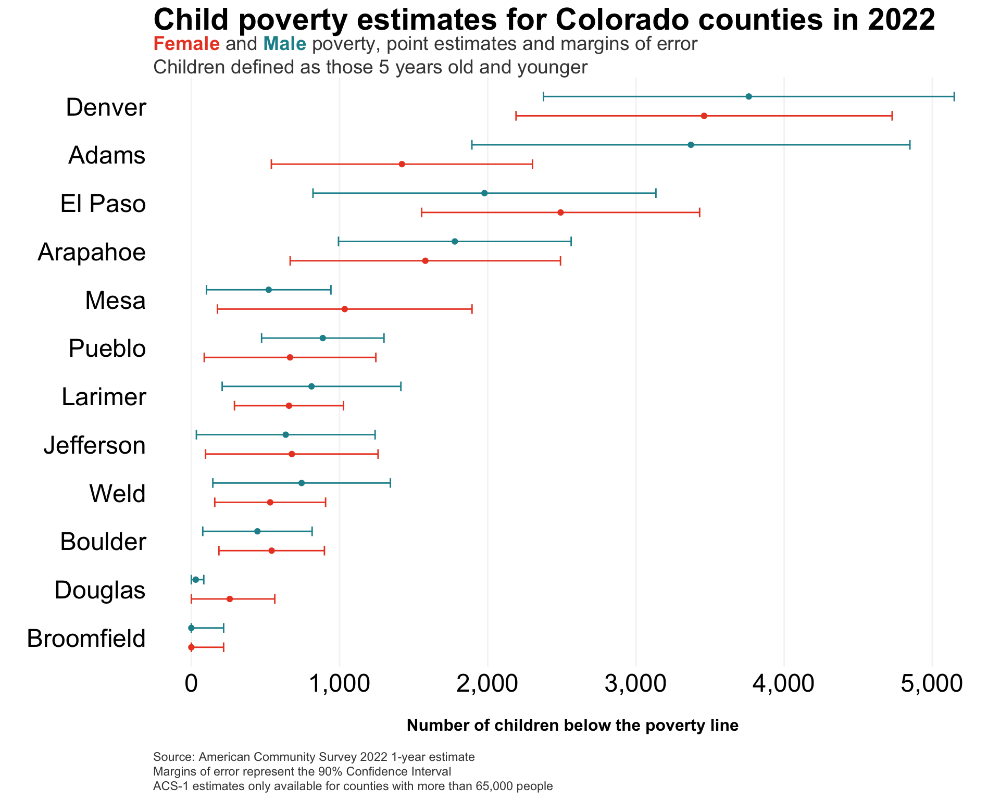

In Part One, I demonstrated how to fetch data and do some basic analysis of U.S. Census data. Each API call with the tidycensus:: package can only be for one year of data, so to do longitudinal analysis requires some additional wrangling.
In this post, I’ll build a script that iterates through the available years, fetches the data, then combines the data into a single dataframe. Then, I’ll unpack some of the trends seen in child poverty in Colorado.
Loading the scales:: package to transform ggplot scales simply (some people choose to explicitly define scales:: in their code rather than loading the library).
2
The gt:: library provides functionality for creating ggplot-esque tables.
3
The glue:: package allows for simple addition of HTML to ggplot graphics.
4
The first time that you’re working with the tidycensus:: package, you need to request an API key at https://api.census.gov/data/key_signup.html. The install= argument will install your personal key to the .Renviron file, and you won’t need to use the census_api_key() function again.
Data
For this analysis, I’m interested in looking at the most recent state-level child poverty data available from the U.S. Census Bureau, and I want to construct a longitudinal sense of the change in child poverty.
First, let’s revisit the different American Community Survey products – ACS-1 and ACS-5.
What’s the difference between these, and how do you choose which survey product to use for your purposes?
Feature
ACS 1-Year Estimates
ACS 5-Year Estimates
Data Collection Period
12 months
60 months
Population Coverage
Areas with 65,000 or more people
All geographic areas, including those with fewer than 65,000 people
Sample Size
Smallest
Largest
Reliability
Less reliable due to smaller sample size
More reliable due to larger sample size
Currency
Most current data
Less current, includes older data
Release Frequency
Annually
Annually
Best Used For
Analyzing large populations, when currency is more important than precision
Analyzing small populations, where precision is more important than currency
Example Usage
Examining recent economic changes
Examining trends in small geographic areas or small population subgroups
In Part One, I wanted to fetch the most recent, reliable estimates for state-level and county-level poverty data, which led me to use the 5-year estimates. For this post, I am interested in constructing a longitudinal dataset of the most recent year-on-year estimates. If I again used the 5-year estimates, I would be comparing results across years that include much of the same sampling period (as shown in the graphic below).
The ACS-5 product has a 60-month sampling period for each annual release, meaning that 48 months of sampling overlap with each annual ACS-5 release1
For this analysis, I’ll use the 1-year estimates from the American Community Survey, which will limit my ability to analyze changes in geographic units with populations greater than 65,000.
As I did in Part One, I’ll use the following series from the American Community Survey:
B01001_003: Estimate!!Total:!!Male:!!Under 5 years (all racial groups)
B01001_027: Estimate!!Total:!!Female:!!Under 5 years (all racial groups)
B17001_004: Estimate!!Total:!!Income in the past 12 months below poverty level:!!Male:!!Under 5 years
B17001_018: Estimate!!Total:!!Income in the past 12 months below poverty level:!!Female:!!Under 5 years
Fetching from the tidycensus:: API
years <-seq(2005, 2022) %>%setdiff(2020)
5
Data for the ACS-1 product begins in 2005.
6
Due to the COVID-19 pandemic, the U.S. Census Bureau does not have standard ACS products available for 2020. The setdiff() function removes 2020 from the vector.
Next, I’ll define a function to fetch the ACS data for each year in the vector.
Then, I’ll use purrr::map_df() to apply each year to the fetch_acs_data() function that I created, which will result in a single dataframe of all years.
combined_acs_data <-map_df(years, fetch_acs_data)
Data wrangling
Creating some fields to combine gender-based poverty estimates and calculate a percent of the child population measure
Data from the American Community Survey represents results from a sample (in this case, a 1-year sample – “acs1”) that come with a margin of error. Said another way, each data value is considered an estimate with a corresponding margin of error, which the Census Bureau calculates.2 Point estimates should be used with caution, and the provided margins of error are key to understanding the uncertainty from the sample around that estimate.
I’ll illustrate this uncertainty in the 2022 ACS-1 poverty data, using the geom_errorbar() function from ggplot.
# note that this would be fewer steps if I did another # API call to build the dataframe in tidy formatcombined_acs_data %>%select(county, year, male_u5_povertyE, male_u5_povertyM, female_u5_povertyE, female_u5_povertyM) %>%filter(year ==2022) %>%pivot_longer(cols =3:6,names_to ="variable",values_to ="estimate" ) %>%mutate(gender =if_else(str_detect(variable, "female"), "Female", "Male"),variable_type =if_else(str_detect(variable, "E$"), "estimate", "moe")) %>%select(-variable) %>%spread(variable_type, estimate) %>%ggplot(.,aes(x=estimate, y=reorder(county, estimate), color=gender)) +geom_point(position =position_dodge(width = .8)) +geom_errorbarh(aes(xmin=if_else(estimate - moe <0, estimate - estimate, estimate - moe), xmax=estimate + moe), height =0.4,position =position_dodge(width = .8)) +labs(y='',x='\nNumber of children below the poverty line\n',caption=caption_text) +ggtitle(title_text,subtitle=subtitle_text) +scale_x_continuous(labels = comma) +scale_color_manual(values = gender_cols) + my.theme +theme(legend.position ='none')

And now I can visualize the child poverty estimates in my home county (Jefferson) over time, from 2005-2022.
Calling these two geom_line() functions separately, so that Jefferson County is rendered on top of all other counties.
Bonus: Using Observable Plot
I’ll show how to use Observable Plot to build some interactive graphics (this can be done with R, but I want to experiment more with what Javascript can do).
To use Observable Plot in Quarto, you need to first have your data object defined in an Observable JS object, which can be achieved by:
Reading in the object directly as an Observable JS object (such as with the FileAttachment() function), or
Converting your R or Python object using the ojs_define() function in an R or Python code chunk
Note that, if you choose the latter (which I’ll do here), this object only operates when your site or knitr document is rendered (meaning, it won’t execute as a code chunk like you can with R, Python, or SQL in Quarto).
ojs_define(ojsd = combined_acs_data)
Then, I’ll create a line plot of child poverty by county over time, faceting by region.
Plot.plot({<!-- using options from here to learn:https://observablehq.com/plot/features/facets -->title:"Child poverty (%) in Colorado by county",caption:"Source: American Community Survey",width:1200,heigh:600,x: {nice:true,label:"Year",ticks:5,tickFormat: d => d.toString(),labelFontSize:50,tickSize:5,tickFontSize:12 },color: {type:"categorical"},y: {grid:true,label:"Child poverty rate (%)",domain: [0,100]<!--labelFontSize:50,--><!--tickFontSize:50--> },fx: {label:"Region"<!-- these are not working --><!--tickFontSize:32,--><!--labelFontSize:32--> },marks: [ Plot.ruleY([0]), Plot.lineY(transpose(ojsd), {x:"year",fx:"region",y: d => d.perc_u5_poverty*100,z:"county",stroke:"region",tip:true}) ]})
Some comments on the above:
There are discussions online that indicate that not all Javascript styling works in Quarto, and this supports that (some font size elements don’t seem to work, faceting options, etc.). I’d like to test that in Observable directly, but for now, I’ll just note that this is not my favorite styling.
Aside from some counties in the Front Range, there’s pretty significant volatility in these child poverty estimates from one year to the next.
Conclusion
In this tidycensus:: post, I demonstrated:
How to fetch data across multiple years from the U.S. Census Bureau and wrangle the data for longitudinal analysis
How to move between R or Python objects and Observable JS objects in Quarto
How to make some simple interactive graphics with Observable Plot
More to come on poverty analysis in future posts!
Footnotes
Screenshot taken from the ACS 2018 Handbook, found here: https://www.census.gov/content/dam/Census/library/publications/2018/acs/acs_general_handbook_2018_ch03.pdf.↩︎
By default the tidycensus:: API provides the margin of error at the 90% confidence interval, but you can change this with the moe_level argument within get_acs().↩︎